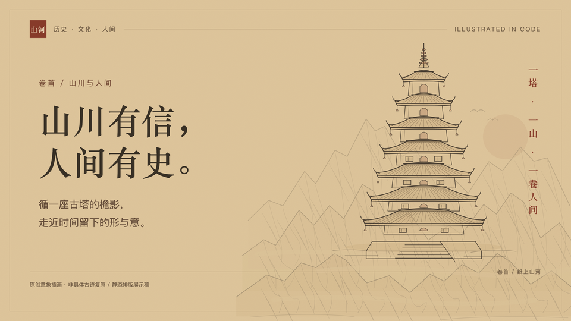
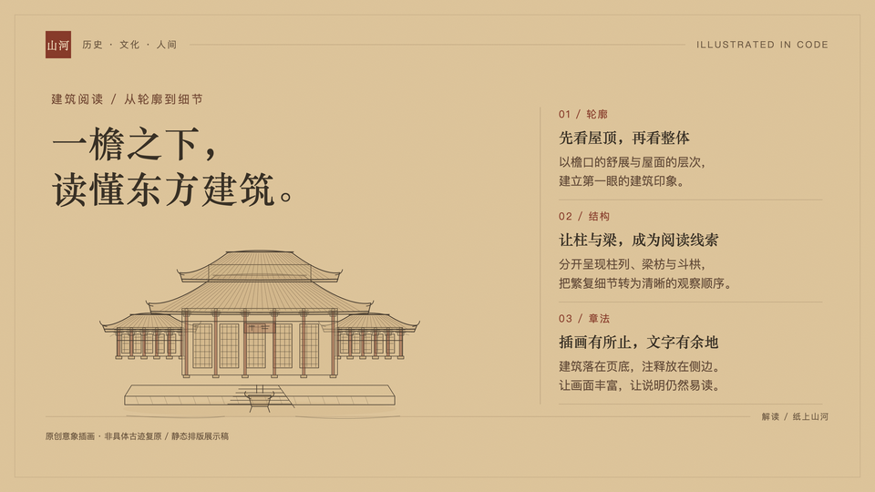
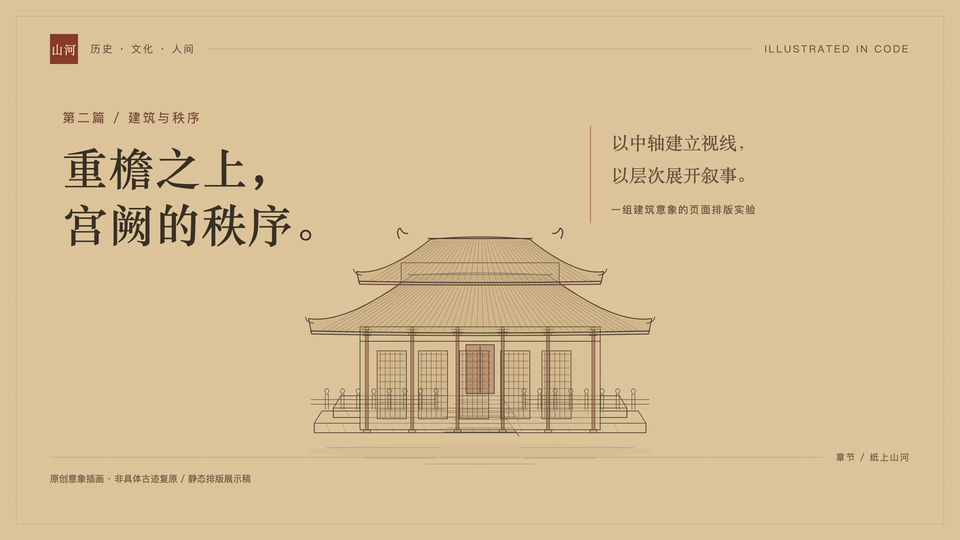
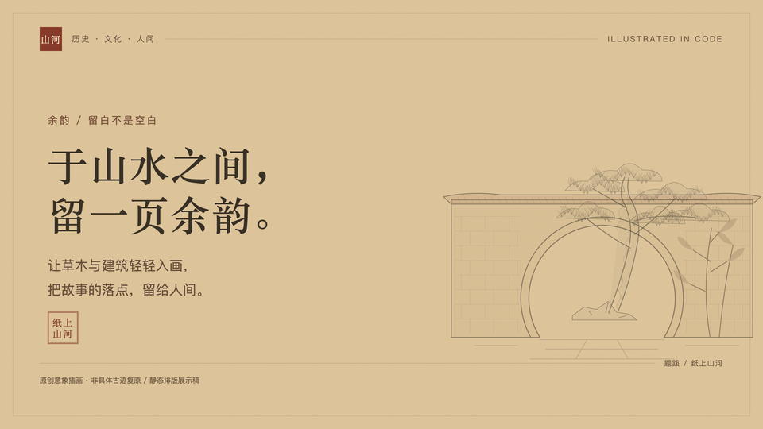

古塔 · 层檐听风
卷首右侧 / 章节标识层檐、铃铎、塔身、台基独立分组
中国传统文化 · 原创矢量绘画资源
初集 / 八景 · 三色 / 代码绘制
AN ATLAS OF CHINESE CULTURAL FORMS
以墨线为骨，以淡赭为韵。
让一座塔、一重檐、一片山，成为文字之外的余韵。
01 / THE ELEMENTS
点击画作查看原始 SVG；下方提供三种配色。
层檐、铃铎、塔身、台基独立分组
重檐主殿、两侧配殿、香炉与石阶
重檐屋顶、斗栱、柱列与台基栏杆
远、中、近三层山脊与留白云带
拱券、砌石、栏杆与水纹独立分组
月洞门、砖墙、竹叶与铺地
枝干、皴线与六簇针叶
三组如意云与日轮，低密度装饰
02 / IN COMPOSITION
四张 1920 × 1080 静态排版示例

右侧主视觉，左侧留给标题

主体与注释分栏，避免插画抢字

宫阙压景，屋檐成为叙事节奏

月洞与古松，陪衬简短引文